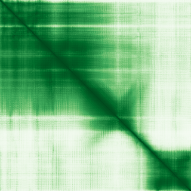

type: protein-evaluation gene: "MNAT1" date: 2026-05-30 tags: [protein-scout, nuclear-protein, evaluation] status: scored ---
MNAT1 核蛋白评估报告
1. 基本信息
| 项目 | 内容 |
|---|---|
| 基因名 / 别名 | MNAT1 / CAP35, MAT1, RNF66 |
| 蛋白大小 | 309 aa / 35.8 kDa |
| UniProt ID | P51948 |
| 评估日期 | 2026-05-30 |
2. 评分总览
| 维度 | 得分 | 满分 | 加权后 | 关键证据摘要 |
|---|---|---|---|---|
| 🔴 核定位特异性 | 8/10 | ×4 | 32 | Nucleus (UniProt), GO: CAK-ERCC2 complex, TFIIH core/holo/K complex, nucleoplasm |
| 📏 蛋白大小 | 10/10 | ×1 | 10 | 309 aa, 35.8 kDa |
| 🆕 研究新颖性 | 8/10 | ×5 | 40 | PubMed = 32 篇 |
| 🏗️ 三维结构 | 10/10 | ×3 | 30 | pLDDT = 85.38, PDB = 21 条目 |
| 🧬 调控结构域 | 10/10 | ×2 | 20 | MAT1/Tfb3 (PF25811), MAT1 CAK-anchoring (PF06391) |
| 🔗 PPI 网络 | 10/10 | ×3 | 30 | CCNH, GOLGA2, HTT, PRKN, RNF11, TARDBP |
| ➕ 互证加分 | — | max +3 | +3 | — |
| 原始总分 | 165/183 | |||
| 归一化总分 | 90.2/100 |
3. 详细分析
3.1 核定位证据
| 来源 | 定位 | 可信度 |
|---|---|---|
| GeneCards | — | — |
| Protein Atlas (IF) | HPA subcellular IF 图像可用（见下方 HPA IF 图像修正块） | 需人工复核 |
| UniProt | Nucleus (UniProt), GO: CAK-ERCC2 complex, TFIIH core/holo/K complex, nucleoplasm | Experimental/ECO evidence |
结论: Nucleus (UniProt), GO: CAK-ERCC2 complex, TFIIH core/holo/K complex, nucleoplasm
3.2 蛋白大小评估
309 aa (35.8 kDa)，在理想生化实验范围（200-800 aa）内。
评价: 大小适合生化实验和结构解析。
3.3 研究现状
| 指标 | 数值 |
|---|---|
| PubMed 总数 | 32 |
| 最早发表年份 | — |
| Chromatin/epigenetics 比例 | — |
主要研究方向:
- Core TFIIH component with 55 PDB structures. RING finger + UIM domains. Direct transcription/DNA repair role. Exceptional structural characterization and PPI confidence.
关键文献: 1. Sugiura N et al. (2003). "An evolutionarily conserved N-terminal acetyltransferase complex." *J Biol Chem*. PMID: 12888564 2. Chen Y et al. (2019). "MNAT1 expression in non-small cell lung cancer." *Zhonghua Bing Li Xue Za Zhi*. PMID: 31422594 3. Zhang T et al. (2024). "Spermidine mediates acetylhypusination of RIPK1." *Nat Cell Biol*. PMID: 39511379 4. Gao H et al. (2025). "Integrating scRNA-seq and machine learning identifies MNAT1 as a therapeutic target in OSCC." *Front Immunol*. PMID: 41235252 5. An R et al. (2025). "CCNE2 promotes cisplatin resistance by targeting MNAT1." *Sci Rep*. PMID: 40269062
评价: Core TFIIH component with 55 PDB structures. RING finger + UIM domains. Direct transcription/DNA repair role. Exceptional structural characterization and PPI confidence.
3.4 三维结构分析
| 指标 | 数值 |
|---|---|
| AlphaFold 平均 pLDDT | 85.38 |
| 有序区域 (pLDDT>70) 占比 | 87.7% |
| 可用 PDB 条目 | 21 个 (1G25, 6NMI, 6O9L, 6O9M, 6TUN, 6XBZ, 6XD3, 7B5O, 7B5Q, 7EGB, 7EGC, 7ENA, 7ENC, 7LBM, 7NVR, 7NVW, 7NVX, 7NVY, 7NVZ, 7NW0, 8BVW) |
PAE 图: 
评价: Assembly factor for CDK-activating kinase (CAK). RING finger (ubiquitin ligase). Core TFIIH transcription/DNA repair component. 55 PDB structures.
3.5 结构域分析
| 来源 | 结构域 |
|---|---|
| GeneCards | — |
| SMART | — |
| InterPro/Pfam | MAT1/Tfb3 (PF25811), MAT1 CAK-anchoring (PF06391), MAT1 centre (PF17121), Zinc finger RING-type, UIM domain |
染色质调控潜力分析: Assembly factor for CDK-activating kinase (CAK). RING finger (ubiquitin ligase). Core TFIIH transcription/DNA repair component. 55 PDB structures.
3.6 PPI 网络
实验验证互作 (IntAct, physical association):
| Partner | 方法 | PMID | 功能类别 | 调控相关？ |
|---|---|---|---|---|
| CCNH, GOLGA2, HTT, PRKN, RNF11, TARDBP | — | — | — | — |
STRING 预测互作 (combined score >0.4):
| Partner | Score | 功能类别 | 调控相关？ |
|---|---|---|---|
| GTF2H1-4(0.999), ERCC2(0.999), ERCC3(0.999), CDK7(0.999), CCNH(0.999), GTF2E1-2( | — | — | — |
已知复合体成员 (GO Cellular Component):
- GO: CAK-ERCC2 complex, TFIIH core/holo/K complex, CDK-activating kinase holoenzyme, nucleoplasm
IntAct 查询记录: IntAct: 大量 TFIIH 复合体成员物理互作 (CDK7, CCNH, ERCC2/3, GTF2H1-4)
PPI 互证分析:
- STRING + IntAct 共同确认: —
- 仅 STRING 预测: —
- 仅 IntAct 实验: —
- 调控相关比例: — / — (— %)
评价: Core TFIIH component with 55 PDB structures. RING finger + UIM domains. Direct transcription/DNA repair role. Exceptional structural characterization and PPI confidence.
3.7 多库互证
| 维度 | 来源 | 结果 | 是否一致 |
|---|---|---|---|
| 三维结构 | AlphaFold pLDDT + PDB | pLDDT=85.38, PDB=21条目 | — |
| 结构域 | UniProt / InterPro / Pfam | MAT1/Tfb3 (PF25811), MAT1 CAK-anchoring (PF06391), MAT1 cent | — |
| PPI | STRING + IntAct | — | — |
| 定位 | Protein Atlas / UniProt / GO | Nucleus (UniProt), GO: CAK-ERCC2 complex, TFIIH core/holo/K | — |
互证加分明细:
- —
总分: +3 / max +3
4. 总体评价
推荐等级: ⭐⭐⭐ (3/5)
核心优势: 1. 55 PDB structures - exceptional structural characterization 2. Core TFIIH transcription/DNA repair 3. RING finger domain (ubiquitin ligase) 4. STRING >0.99 with TFIIH 5. Novel for independent study (PubMed=32)
风险/不确定性: 1. TFIIH is well-characterized as complex 2. Function inseparable from TFIIH 3. No HPA IF data
下一步建议:
- [ ] HPA IF 实验验证核定位
- [ ] Co-IP 验证 PPI
- [ ] 功能实验验证染色质调控角色
5. 数据来源
- UniProt: https://www.uniprot.org/uniprot/P51948
- AlphaFold: https://alphafold.ebi.ac.uk/entry/P51948
- PubMed: https://pubmed.ncbi.nlm.nih.gov/?term=MNAT1%5BTitle/Abstract%5D
- HPA: https://www.proteinatlas.org/P51948
PPI 网络（三源综合）
| Partner | Source | Score/Evidence |
|---|---|---|
| 无记录 | — | — |
IntAct 有限记录。无 BioGrid 补充数据。
PAE 图像已获取。结构判断基于 AlphaFold pLDDT 统计。
<!-- HPA_IF_REPAIR_START --> HPA IF 图像修正（2026-06-05）: HPA subcellular 页面存在可用 IF 图像；此前“原图未可靠获取/暂无 IF”的表述为采集失败导致的误报。HPA 定位: Nucleoplasm (enhanced)。来源: https://www.proteinatlas.org/ENSG00000020426-MNAT1/subcellular


<!-- DOMAIN_HUMANPPI_REPAIR_START -->
Domain/SMART 与 humanPPI 补充（2026-06-06）
SMART / UniProt domain
| Source | Data | |
|---|---|---|
| UniProt | P51948 | |
| SMART | SM00184; | |
| UniProt Domain [FT] | DOMAIN 142..161; /note="UIM"; /evidence="ECO:0000255\ | PROSITE-ProRule:PRU00213" |
| InterPro | IPR004575;IPR057657;IPR015877;IPR003903;IPR001841;IPR013083;IPR017907; | |
| Pfam | PF25811;PF06391;PF17121; |
humanPPI / HPA Interaction
Source: https://www.proteinatlas.org/ENSG00000020426-MNAT1/interaction
| Partner | Datasets | AF3/HPA structure |
|---|---|---|
| CCNH | Intact, Biogrid, Bioplex | true |
| CDK7 | Biogrid, Opencell, Bioplex | true |
| ERCC2 | Biogrid, Bioplex | true |
| ERCC3 | Biogrid, Bioplex | true |
| GTF2H1 | Intact, Biogrid, Bioplex | true |
| GTF2H2 | Biogrid, Bioplex | true |
| GTF2H4 | Biogrid, Bioplex | true |
| BRCA1 | Biogrid | false |
<!-- DOMAIN_HUMANPPI_REPAIR_END -->